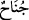

İnsanı haktan saptırıp meylettiren günaha “ adı verilmiş, sonra her türlü günaha “ denilmiştir.
“Allah sizin açığa vurduklarınızı da, gizlediklerinizi de bilir.” Bu ifâde, bu gibi
yerlere bozgunculuk yapmak ve gizli kalıp gözükmemesi gereken şeyleri görmek
niyetiyle girenler için bir ihtardır.
Nisâbü’l-ihtisâb’da der ki: “Bir adamın dut ağacı olsa ve bu ağacın dallarını satsa;
müşteri dallarını kesmek üzere ağacın üzerine çıktığında yakında bulunan komşunun
gizliliklerine müttali olacaksa o komşu hâkime baş vurarak bunu engelleyebilir.”
Sadru’ş-şehîd Vâkıât’ında der ki: Müşteri ağaca çıkmadan önce görülmesi yasak
olan yerlerini örtmeleri için komşulara bir veya iki kez haber verir. Çünkü burada iki
hak söz konusudur. Eğer müşteri, komşu konuyu hâkime götürene kadar böyle yapmazsa,
hâkim müşteriyi men’ etmeyi uygun görürse bunu yapabilir.
Bir kimse komşu kadınları görmek için duvarında bir delik açarsa buna engel olunur.
el-Bostân’da der ki: Bir kimsenin izinsiz olarak başka birinin evine bakması câiz
değildir. Böyle yapan biri günahkâr olur. Şâyet bakarsa, ev sâhibi de onun gözünü
çıkarırsa bu konuda ihtilâf edilmiştir. Bir görüşe göre ev sâhibine bir şey gerekmez.
Diğer görüşe göre ise çıkardığı göz karşılığında üzerine terettüp eden cezâyı çeker. Biz
de bu ikinci görüşü benimsiyoruz.
Hz. Ömer (r.a.) bir gece İbn Mes‘ûd (r.a.) ile birlikte emniyeti temin için Medine
sokaklarında dolaşıyordu. Bir evin kapısının aralığından içeri baktı. Elinde şarap,
yanında şarkı söyleyen bir câriye bulunan bir ihtiyar gördü. İbn Mes‘ûd’la beraber evin
duvarına tırmanıp içeri girdiler. Ömer (r.a.): “Senin gibi bir ihtiyara böyle yapmak
yakışır mı?” diye çıkıştı. İhtiyar yavaş yavaş ayağa kalkıp Hz. Ömer (r.a.)’e yaklaşarak:
“Ey mü’minlerin emiri! Allah aşkına müsâde edin de konuşayım.” dedi. Hz. Ömer de:
“Söyle” dedi. Bunun üzerine ihtiyar şöyle dedi: “Ben Allah’a bir hususta isyan ettiysem
sen üç hususta isyan ettin.” Hz. Ömer: “Nedir onlar?” diye sorunca ihtiyar: Birincisi
tecessüste bulundun. Halbuki Allah sana bunu yasaklamış ve: “Birbirinizin kusurlarını
araştırmayın” (el-Hucurât, 49/12) buyurmuştur. İkincisi sen duvardan atlayarak eve
girdin. Oysa Allah Teâlâ: “Evlere arkalarından gelip girmeniz iyi davranış değildir
… evlere kapılarından girin.” (el-Bakara, 2/189) buyurmuştur. Üçüncüsü sen izinsiz
girdin. Halbuki Allah Teâlâ: “Ey îman edenler! Kendi evinizden başka evlere, izin
alıp ev halkına selâm vermedikçe girmeyin” (en-Nûr, 24/27) buyurmuştur.” dedi.
Bunun üzerine. Hz. Ömer (r.a.): “Doğru söyledin, beni affediyor musun?” dedi. İhtiyar:
“Allah seni affetsin.” dedi. Hz. Ömer bir taraftan ağlayarak diğer taraftan: “Eğer Allah
affetmezse vay Ömer’in hâline!” diyerek oradan çıktı.
“Bu hâdise muhtesibin[147] evlere izinsiz giremeyeceğine delâlet etmektedir. Oysa
onun açıkça bid‘at işleyen kimselerin evlerine izinsiz girmesinin câiz olduğu sâbittir”
dersen, ben şöyle cevap veririm: O açıkça bid‘at işleyen kimse hakkındadır, bu hâdise
ise günahını gizleyenle ilgilidir.